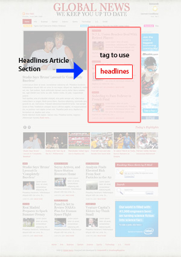
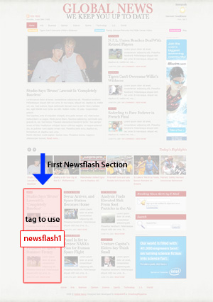

Global News is brought to you by Instantshift & SmashingMagazine under the GNU General Public License. Global News theme is coded by RapidxHTML.
By downloading this theme, under the terms of the GNU General Public License, it is vital that you understood the following terms and conditions.
These are only 3 plug-in you need to install to use in Global News theme. Also there may be number of alternatives for these functions but we choose these three because all these plug-in work great, easy to install/setup and supported by developers.
Note: In YARPP plug-in settings turn off the option "Automatically display related posts?"
You might want to setup your theme before you make it online. It's too easy because you can setup theme settings from wordpress admin panel. Go to Appearances > GlobalNews Options
There will be 2 main group settings. Each group contains number of options for easy setup.
These settings are primarily for various advertisement blocks on this theme. We have marked advertisement blocks in this image.
You can your own custom html code for these ad blocks locations or alternatively you can also use Google Adsense code.
News in all news blocks are controlled by tags. You just need to add tags with each post you want to be displayed in different sections. For example if you want to show a article at featured location then you just add "featured" tag with a post and it will be displayed in featured section. If there are more articles then your limit (number of articles for that section) then most recent article will be displayed. This goes with all other section which I am going to explain here.
In this image you can find with tags you need to add to a post so that particular post can list in a section.
Featured Section News |
|
Headlines Section News |
 |
Carousel Section News |
|
Newsflash Section One News |
 |
Newsflash Section Two News |
|
Newsflash Section Three News |
BTW you can add two or more of these tags to display same article in multiple news blocks.
To upload image, you can use the built-in Add Image WP feature. In the post editing page, notice the Add media icons just below your post title and permalink. Click “Add Image” and an image uploading page will show up.
A new popup box will open. click select files button.
Upload any image that you like.
After the image is uploaded, you can see the image location from the ‘Link URL’ field. In this tutorial, it is: http://www.instantshift.com/wp-content/uploads/2009/06/1.png. Values may vary depending on your blog settings. One may have the time-structured folder while others may not. Copy that value but remember to get rid of your blog home page location. In my case, the final value will be wp-content/uploads/2009/06/1.png.
Then, close the image uploading page and you do not need to clik ‘Insert to Post’ button if you do not want to. When you’re back in the post editing page, scroll down until you find “Custom Fields”. Make a new Custom Field with "thumb" as the key and the image location as the "Value".
Tim McDaniels for a beautiful php script Timthumb for cropping, zooming and resizing web images. TimThumb requires the GD library, which is available on any host sever with PHP 4.3+ installed.